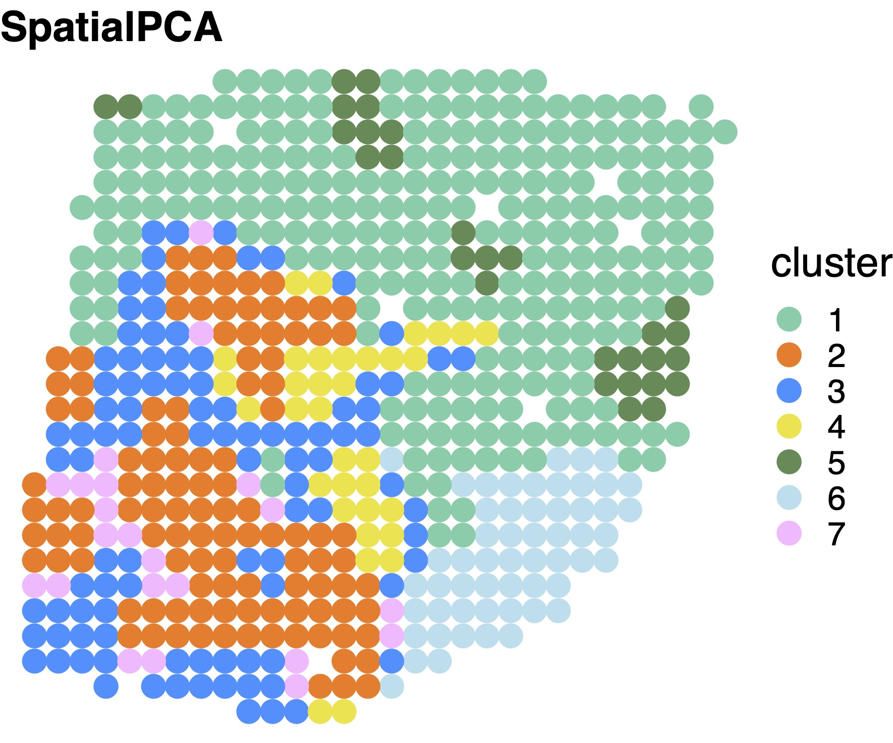
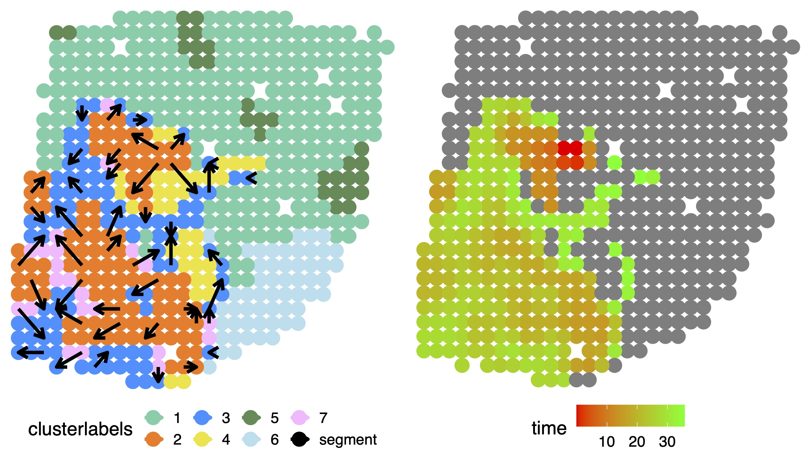
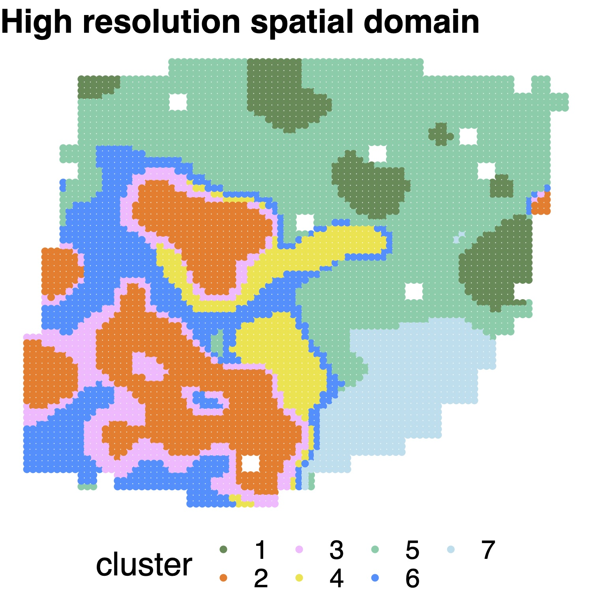

Last updated: 2022-08-13
Checks: 7 0
Knit directory: Tutorial/
This reproducible R Markdown analysis was created with workflowr (version 1.7.0). The Checks tab describes the reproducibility checks that were applied when the results were created. The Past versions tab lists the development history.
Great! Since the R Markdown file has been committed to the Git repository, you know the exact version of the code that produced these results.
Great job! The global environment was empty. Objects defined in the global environment can affect the analysis in your R Markdown file in unknown ways. For reproduciblity it’s best to always run the code in an empty environment.
The command set.seed(20220106) was run prior to running
the code in the R Markdown file. Setting a seed ensures that any results
that rely on randomness, e.g. subsampling or permutations, are
reproducible.
Great job! Recording the operating system, R version, and package versions is critical for reproducibility.
Nice! There were no cached chunks for this analysis, so you can be confident that you successfully produced the results during this run.
Great job! Using relative paths to the files within your workflowr project makes it easier to run your code on other machines.
Great! You are using Git for version control. Tracking code development and connecting the code version to the results is critical for reproducibility.
The results in this page were generated with repository version 44fb96c. See the Past versions tab to see a history of the changes made to the R Markdown and HTML files.
Note that you need to be careful to ensure that all relevant files for
the analysis have been committed to Git prior to generating the results
(you can use wflow_publish or
wflow_git_commit). workflowr only checks the R Markdown
file, but you know if there are other scripts or data files that it
depends on. Below is the status of the Git repository when the results
were generated:
Ignored files:
Ignored: .Rhistory
Ignored: .Rproj.user/
Ignored: analysis/_main.html
Untracked files:
Untracked: code/Simulation.R
Untracked: code/SpatialPCA.R
Untracked: code/SpatialPCA_EstimateLoading.R
Untracked: code/SpatialPCA_SpatialPCs.R
Untracked: code/SpatialPCA_buildKernel.R
Untracked: code/SpatialPCA_highresolution.R
Untracked: code/SpatialPCA_utilties.R
Untracked: data/LIBD_sample9.RData
Untracked: data/Puck_200115_08_count_location.RData
Untracked: data/ST_data.RData
Untracked: data/Tumor_data.RData
Untracked: data/Vizgen_Merfish_count_location.RData
Untracked: data/slideseq.rds
Note that any generated files, e.g. HTML, png, CSS, etc., are not included in this status report because it is ok for generated content to have uncommitted changes.
These are the previous versions of the repository in which changes were
made to the R Markdown (analysis/ST.Rmd) and HTML
(docs/ST.html) files. If you’ve configured a remote Git
repository (see ?wflow_git_remote), click on the hyperlinks
in the table below to view the files as they were in that past version.
| File | Version | Author | Date | Message |
|---|---|---|---|---|
| html | 44fb96c | shangll123 | 2022-08-13 | wflow_git_commit(all = TRUE) |
| html | 45f1160 | shangll123 | 2022-08-13 | Build site. |
| Rmd | 28508cf | shangll123 | 2022-08-13 | wflow_git_commit(all = TRUE) |
| html | d7a07d0 | shangll123 | 2022-08-13 | Build site. |
| Rmd | d8f1e8e | shangll123 | 2022-08-13 | Publish SpatialPCA tutorial |
| html | 7964c20 | shangll123 | 2022-03-22 | Build site. |
| Rmd | 251c36f | shangll123 | 2022-03-22 | Publish SpatialPCA tutorial |
library(SpatialPCA)
library(ggplot2)The breast tumor data is available here. We also saved the raw data that we used in our examples in RData format, which can be downloaded from here.
load("./data/Tumor_data.RData")
print(dim(rawcount)) # The count matrix
print(dim(location)) # The location matrixSpatialPCA takes the raw count data and location coordinates as inputs. We first create a S4 object in the CreateSpatialPCAObject function, then select spatial genes using sparkx in this dataset with large sample size.
# location matrix: n x 2, count matrix: g x n.
# here n is spot number, g is gene number.
# here the column names of sp_count and rownames of location should be matched
ST = CreateSpatialPCAObject(counts=rawcount, location=location, project = "SpatialPCA",gene.type="spatial",sparkversion="spark", gene.number=3000,customGenelist=NULL,min.loctions = 20, min.features=20)SpatialPCA constructs a kernel matrix to model the spatial pattern of spatial PCs.
ST = SpatialPCA_buildKernel(ST, kerneltype="gaussian", bandwidthtype="SJ")
ST = SpatialPCA_EstimateLoading(ST,fast=FALSE,SpatialPCnum=20)
ST = SpatialPCA_SpatialPCs(ST, fast=FALSE)In this data, we select “SJ” to use Sheather & Jones (1991) method, which is usually used in small size datasets to calculate the kernel bandwidth. The user can also specify other bandwidth on their own if needed. After specifying the kernel matrix, SpatialPCA estimates the loading matrix and the spatial PCs.
SpatialPCA detects spatial domains through clustering on the spatial PCs. Here we use walktrap’s clustering method for datasets with small number of locations.
clusterlabel= walktrap_clustering(7, ST@SpatialPCs,round(sqrt(dim(ST@location)[1])))
clusterlabel_refine=refine_cluster_10x(clusterlabel,ST@location,shape="square")# set color
cbp_spatialpca = c( "mediumaquamarine", "chocolate1","dodgerblue", "#F0E442","palegreen4","lightblue2","plum1")
# visualize the cluster
plot_cluster(legend="right",location=ST@location,clusterlabel_refine,pointsize=5,text_size=20 ,title_in=paste0("SpatialPCA"),color_in=cbp_spatialpca)

In ST data, we focused on trajectory inference on tumor and tumor adjacent regions to investigate how these locations are connected to one another and underlie tumorigenesis. Based on the inferred pseudo-time values, we connected neighboring locations on the tissue to construct trajectories.
library(slingshot)
# trajectory on the whole tissue slice
sim = SingleCellExperiment(assays = SpatialPCA_result$rawcount)
reducedDims(sim) = SimpleList(DRM = t(ST@SpatialPCs))
colData(sim)$Walktrap = factor(clusterlabel_refine)
# in this data we set tumor region as start cluster
sim =slingshot(sim, clusterLabels = 'Walktrap', reducedDim = 'DRM',start.clus="2" )
# focus on tumor and its surrounding region
tumor_ind = which(clusterlabel_refine %in% c(2,3,7))
sim_tumor = SingleCellExperiment(assays = rawcount[,tumor_ind])
reducedDims(sim_tumor) = SimpleList(DRM = t(ST@SpatialPCs[,tumor_ind]))
colData(sim_tumor)$Walktrap = factor(clusterlabel_refine[tumor_ind])
sim_tumor =slingshot(sim_tumor, clusterLabels = 'Walktrap', reducedDim = 'DRM',start.clus="2" )
# in this data we set tumor region as start cluster
summary(sim_tumor@colData@listData)
# visualize on whole tissue
pseudotime_traj1_tumor = sim_tumor@colData@listData$slingPseudotime_1
clusterlabels_tumor = SpatialPCA_result$clusterlabel_refine[tumor_ind]
tumor_ind = which(clusterlabel_refine %in% c(2,3,7))
pseudotime_traj1 = sim@colData@listData$slingPseudotime_1
pseudotime_traj1[-tumor_ind]=NA
pseudotime_traj1[tumor_ind]=pseudotime_traj1_tumor
gridnum = 10
color_in=c( "mediumaquamarine", "chocolate1","dodgerblue", "#F0E442","palegreen4","lightblue2","plum1","black","#CC79A7","mediumpurple","seagreen1")
p_traj1 = plot_trajectory(pseudotime_traj1, location,clusterlabels,gridnum,color_in,pointsize=5 ,arrowlength=0.3,arrowsize=1.3,textsize=15 )
print(ggarrange( p_traj1[[4]],p_traj1[[1]],
ncol = 2, nrow = 1))

The users can select data platform (“ST”, “Visium”, or “Other”) in high resolution spatial map reconstruction. We impute nine subspots for each ST spot and impute six subspots for each Visium spot, as the ST and Visium spots are arranged on square and hexagonal lattices. For other types of data, we impute four new locations for each measured location. We also allow users to directly specify the coordinates of unmeasured locations through the “newlocation” option.
STsimu_high_ST = SpatialPCA_highresolution(ST, platform="ST",newlocation=NULL)
cluster_SpatialPCA_high = walktrap_clustering(7, latent_dat=STsimu_high_ST@highPCs,200)
color_in=c( "palegreen4", "chocolate1","plum1", "#F0E442","mediumaquamarine","dodgerblue","lightblue2")
title_in="SpatialPCA High resolution"
plot_cluster(STsimu_high_ST@highPos, as.character(cluster_SpatialPCA_high), pointsize=2,text_size=20 ,title_in,color_in,legend="bottom")

sessionInfo()R version 4.2.1 (2022-06-23)
Platform: x86_64-pc-linux-gnu (64-bit)
Running under: Ubuntu 18.04.5 LTS
Matrix products: default
BLAS: /usr/lib/x86_64-linux-gnu/openblas/libblas.so.3
LAPACK: /usr/lib/x86_64-linux-gnu/libopenblasp-r0.2.20.so
locale:
[1] LC_CTYPE=en_US.UTF-8 LC_NUMERIC=C
[3] LC_TIME=en_US.UTF-8 LC_COLLATE=en_US.UTF-8
[5] LC_MONETARY=en_US.UTF-8 LC_MESSAGES=en_US.UTF-8
[7] LC_PAPER=en_US.UTF-8 LC_NAME=C
[9] LC_ADDRESS=C LC_TELEPHONE=C
[11] LC_MEASUREMENT=en_US.UTF-8 LC_IDENTIFICATION=C
attached base packages:
[1] stats graphics grDevices utils datasets methods base
other attached packages:
[1] ggplot2_3.3.6 SpatialPCA_1.3.0 workflowr_1.7.0
loaded via a namespace (and not attached):
[1] plyr_1.8.7 igraph_1.2.7 lazyeval_0.2.2
[4] sp_1.5-0 splines_4.2.1 listenv_0.8.0
[7] scattermore_0.8 digest_0.6.29 foreach_1.5.2
[10] htmltools_0.5.3 SPARK_1.1.1 fansi_1.0.3
[13] magrittr_2.0.3 tensor_1.5 cluster_2.1.3
[16] doParallel_1.0.17 ROCR_1.0-11 globals_0.15.0
[19] matrixStats_0.61.0 askpass_1.1 spatstat.sparse_2.1-1
[22] pdist_1.2.1 colorspace_2.0-3 ggrepel_0.9.1
[25] xfun_0.27 dplyr_1.0.9 rgdal_1.5-32
[28] callr_3.7.0 jsonlite_1.8.0 progressr_0.10.1
[31] spatstat.data_2.2-0 survival_3.3-1 zoo_1.8-10
[34] iterators_1.0.14 glue_1.6.2 polyclip_1.10-0
[37] gtable_0.3.0 leiden_0.4.2 future.apply_1.9.0
[40] abind_1.4-5 scales_1.2.0 DBI_1.1.2
[43] miniUI_0.1.1.1 Rcpp_1.0.9 viridisLite_0.4.0
[46] xtable_1.8-4 reticulate_1.22 spatstat.core_2.3-0
[49] matlab_1.0.4 umap_0.2.8.0 htmlwidgets_1.5.4
[52] httr_1.4.3 RColorBrewer_1.1-3 ellipsis_0.3.2
[55] Seurat_4.0.5 ica_1.0-2 pkgconfig_2.0.3
[58] sass_0.4.2 uwot_0.1.11 deldir_1.0-6
[61] utf8_1.2.2 tidyselect_1.1.2 rlang_1.0.2
[64] reshape2_1.4.4 later_1.3.0 munsell_0.5.0
[67] tools_4.2.1 cachem_1.0.6 cli_3.3.0
[70] generics_0.1.3 ggridges_0.5.3 evaluate_0.15
[73] stringr_1.4.0 fastmap_1.1.0 yaml_2.3.5
[76] goftest_1.2-3 processx_3.5.3 knitr_1.36
[79] fs_1.5.2 fitdistrplus_1.1-8 purrr_0.3.4
[82] RANN_2.6.1 pbapply_1.5-0 future_1.26.1
[85] nlme_3.1-157 whisker_0.4 mime_0.12
[88] pracma_2.3.8 compiler_4.2.1 rstudioapi_0.13
[91] plotly_4.10.0 png_0.1-7 spatstat.utils_2.3-1
[94] tibble_3.1.5 bslib_0.4.0 stringi_1.7.8
[97] ps_1.7.0 RSpectra_0.16-1 rgeos_0.5-9
[100] lattice_0.20-45 Matrix_1.4-1 vctrs_0.4.1
[103] CompQuadForm_1.4.3 pillar_1.8.0 lifecycle_1.0.1
[106] spatstat.geom_2.3-0 lmtest_0.9-40 jquerylib_0.1.4
[109] RcppAnnoy_0.0.19 data.table_1.14.2 cowplot_1.1.1
[112] irlba_2.3.5 httpuv_1.6.3 patchwork_1.1.1
[115] R6_2.5.1 promises_1.2.0.1 KernSmooth_2.23-20
[118] gridExtra_2.3 parallelly_1.31.1 codetools_0.2-18
[121] MASS_7.3-57 assertthat_0.2.1 openssl_2.0.2
[124] rprojroot_2.0.3 withr_2.5.0 SeuratObject_4.1.0
[127] sctransform_0.3.3 mgcv_1.8-40 parallel_4.2.1
[130] grid_4.2.1 rpart_4.1.16 tidyr_1.1.4
[133] rmarkdown_2.14 Rtsne_0.16 git2r_0.30.1
[136] getPass_0.2-2 shiny_1.7.2